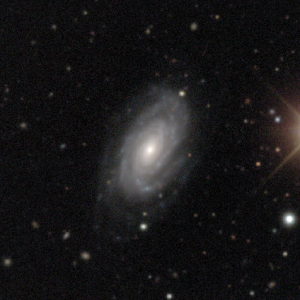

A case study in machine learning:
galaxy classification
and artificial redshifting
Lucas Fowler11th September 2018

primarily into spirals and ellipticals.
Galaxy Zoo, Lintott, Schawinski, et. al. 2008
with z = 0.02, 0.04, 0.06, 0.08, 0.10 respectively (With Dennis Turp, Sandro Ackermann, Nicole Widmer)
Process Pipeline
Note: Train and Validation split not shownObject Selection
|
Some astro infos
- Training on raw FITS images instead of jpeg increases information content
- But asinh stretch still required to accentuate faint features (Lupton et. al. 2003)
- u and z bands added little extra training content
- Images were cropped and resized to all have the equivalent angular diameter distance to compare equal sizes

|
||||
| u | g | r | i | z |

|
|||
| jpeg | normalised | asinh | zoomed |
ML Infos
- Resnet 50 trains with approx 36000 raw images
- Duplication of training set by four rotations of 90 degrees
- Brightness and contrast make little difference
- Training took about 20 hours on 2 Titan GPUs at 50% each
Results
In conclusion
- Newer surveys will bring larger samples
- PanSTARRS, LSST
- But we will need to develop unsupervised learning models
- Train using physical simulations
I want to continue this as my master thesis, but I need a supervisor.